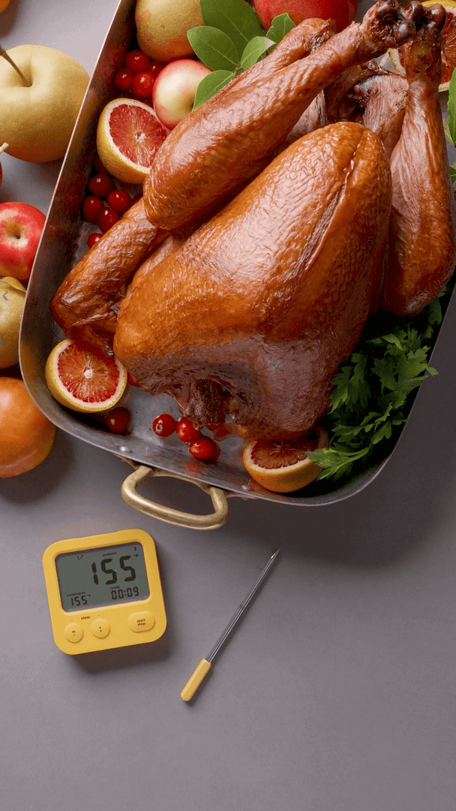

厨房智能硬件 · AI 烹饪辅助
何时出炉更合适？Combustion 用 AI 探索烹饪预测
从显示温度，到帮助判断下一步操作，厨房传感器开始面对更具体的任务。

北京时间10月22日，The Spoon 刊出 SKS 2026 访谈。Combustion 创始人 Chris Young 表示，团队正在利用积累的烹饪记录训练 AI，探索更准确地预测完成时间，以及食物离开烤箱后还会升温多少。
访谈还讨论了 AI 协调多台厨电、辅助蒸汽与湿度设置的可能性。前者涉及烹饪预测进展，后者属于未来构想；报道未公布独立误差测试、新功能上线时间或适用机型。
The Spoon｜Michael Wolf 现场访谈 · 2026-10-22 01:00（北京时间；原站 10/21）Combustion 官网｜既有产品与配图 · 既有产品资料，10月22日访问时效说明：新访谈发表于本轮24小时窗口内；对话发生于上周，配图为既有产品资料。